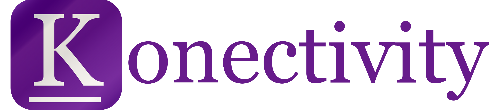

<!DOCTYPE html>
<html>

  <head>
    <meta charset="utf-8">
    <meta name="viewport" content="initial-scale=1, maximum-scale=1, user-scalable=no, width=device-width">
    <title></title>
 
    <link href="lib/ionic/css/ionic.css" rel="stylesheet">
    
    <link rel="stylesheet" type="text/css" href="css/bootstrap.min.css">
  
    <link href="css/style.css" rel="stylesheet">
    <link href="css/ionic.contrib.frostedGlass.css" rel="stylesheet">
    <link href="css/xeditable.css" rel="stylesheet">
    <link href='http://fonts.googleapis.com/css?family=Oswald' rel='stylesheet' type='text/css'>

    <link rel="stylesheet" type="text/css" href="css/animate.css" />


    <link href="css/ngDialog.css" rel="stylesheet">
    
    <link href="css/ngDialog-theme-default.css" rel="stylesheet">
    
    <link href="css/ngDialog-theme-plain.css" rel="stylesheet">

    
    <link href="css/angular-animate.css" rel="stylesheet">

    <!-- Sematics not working properly
    <link rel="stylesheet" type="text/css" href="css/bootstrap.min.css">-->
    <!-- IF using Sass (run gulp sass first), then uncomment below and remove the CSS includes above
    <link href="css/ionic.app.css" rel="stylesheet">
    -->
  </head>


  <body ng-app="starter">


    <!-- <div align="center" style ="padding-top: 20px; padding-bottom: 20px">
    </img><br>
    <h6><b>Unlocking the power of human networks</b></h6>
    <p>Just a moment...</p>
    </div> -->
    <ion-nav-view></ion-nav-view>


    <!-- ionic/angularjs js -->
    <script src="lib/ionic/js/ionic.bundle.js"></script>
     <script src="lib/ionic/js/ionic.js"></script>
      <script src="lib/ionic/js/ionic.min.js"></script>
 

    <!-- cordova script (this will be a 404 during development) -->
    <script src="lib/ngCordova/dist/ng-cordova.js"></script>
    <script src="lib/ngCordova/dist/ng-cordova.min.js"></script>
    <script src="cordova.js"></script>


    <!-- Push notification -->
    <script type="text/javascript" charset="utf-8" src="js/jquery_1.5.2.min.js"></script>
    <script type="text/javascript" src="js/PushNotification.js"></script>
    <script type="text/javascript" src="js/notification.js"></script>

	<!-- app specific libraries -->
    <script src="lib/socket.io.js"></script>
    <script src="lib/angular-touch.js"></script>
    <script src="lib/ionic.contrib.frostedGlass.js"></script>
    <script src="lib/xeditable.js"></script>
    <script src="lib/ngDialog.js"></script>
    <script src="lib/angular-socket-io/socket.js"></script>
    <script src="lib/angular-animate/angular-animate.js"></script>
     <script src="lib/angular-animate/angular-animate.min.js"></script>
    <!-- your app's js -->

    <script type="text/javascript" src="js/jquery.min.js"></script>
    <script type="text/javascript" src="lib/angular-intro.min.js"></script>
    <script type="text/javascript" src="lib/intro.min.js"></script>
    <script src="js/bindonce.js"></script>
    <script src="js/bindonce.min.js"></script>
    <script src="js/debug-tools.js"></script>
    <script src="js/mock-values.js"></script>
    <script src="js/app.js"></script>
    <script src="js/states.js"></script>
    <script src="js/services.js"></script>
    <script src="js/filters.js"></script>
    <script src="js/utils.js"></script>
    <script src="js/app-controllers.js"></script>
    <script src="js/controllers/login-controller.js"></script>
    <script src="js/controllers/app-controller.js"></script>
    <script src="js/controllers/my-profile-controller.js"></script>
    <script src="js/controllers/potential-matches-controller.js"></script>
    <script src="js/controllers/logout-controller.js"></script>


  </body>
</html>
